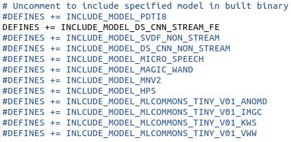
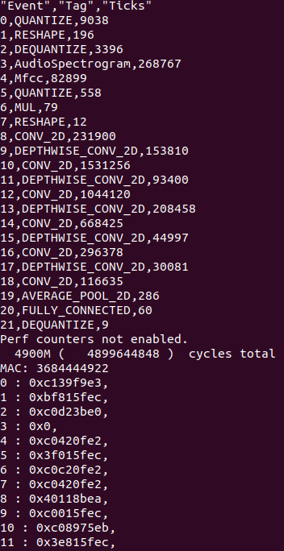
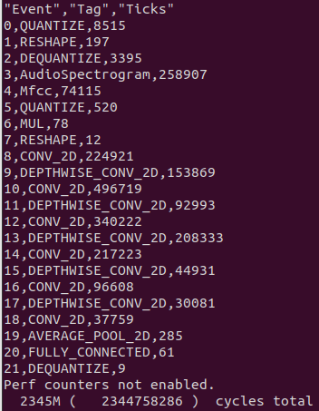

Lab2: SIMD and Quantization#
Goals of this lab#
Background#
The KWS model can work well in lab1. But there still have potential that we can enhance the performance by adding some additional implementations.

Figure 1. The cycle spent by the float32 KWS model executed in a serial manner.
Predict the label correctly of quantized ds_cnn_stream_fe model -10%#
$ cd CFU-Playground/proj
$ cp -r <your lab1 proj folder> <lab2 proj name>
$ cd <lab2 proj name>
Since that quantizing float model to int8 is quite complicated. So we provide the quatized model to you. You can simply replace CFU-Playground/common/src/models/ds_cnn_stream_fe/ds_cnn_stream_fe.tflite with the new model. Google drive download link
Ensure that the ds_cnn_stream_fe model is included.
Builds and programs gateware. Builds and loads C program.
$ make clean
$ make prog USE_VIVADO=1 TTY=/dev/ttyUSB0
$ make load BUILD_JOBS=4 TTY=/dev/ttyUSB1
Results show that most of cycles are passed during conv_2D processes. So we’re gonna try to improve it.
Figure2. The cycle spent by the quantized int8 KWS model executed in a serial manner
Custom cfu.v -80%#
Modify cfu.v -30%#
Build a custom cfu which can perform SIMD operation. The goal is to calculate 4 product values simultaneously.
module Cfu (
input cmd_valid,
output cmd_ready,
input [9:0] cmd_payload_function_id,
input [31:0] cmd_payload_inputs_0,
input [31:0] cmd_payload_inputs_1,
output reg rsp_valid,
input rsp_ready,
output reg [31:0] rsp_payload_outputs_0,
input reset,
input clk
);
localparam InputOffset = $signed(9'd128);
// SIMD multiply step:
wire signed [15:0] prod_0, prod_1, prod_2, prod_3;
assign prod_0 =
assign prod_1 =
assign prod_2 =
assign prod_3 =
wire signed [31:0] sum_prods;
assign sum_prods = prod_0 + prod_1 + prod_2 + prod_3;
// Only not ready for a command when we have a response.
assign cmd_ready = ~rsp_valid;
always @(posedge clk) begin
end
endmodule
Modify conv.h -50%#
Run the commands in your project folder.
$ mkdir -p src/tensorflow/lite/kernels/internal/reference/integer_ops
$ cp \
../../third_party/tflite-micro/tensorflow/lite/kernels/internal/reference/integer_ops/conv.h \
src/tensorflow/lite/kernels/internal/reference/integer_ops/conv.h
Since the int8 model will reference conv.h in integer_ops folder. So in order to enhance the performance, we need to modify it.
There are some tips for following step. 1. Stronly recommend you too view the whole structure of .tflite file of this lab. You can view the layers graph of it by uploading it to this website. 2. Find out what kind of parameters will affect your implementation of custom op.
#include "playground_util/print_params.h"
/* ... */
inline void ConvPerChannel(
const ConvParams& params, const int32_t* output_multiplier,
const int32_t* output_shift, const RuntimeShape& input_shape,
const int8_t* input_data, const RuntimeShape& filter_shape,
const int8_t* filter_data, const RuntimeShape& bias_shape,
const int32_t* bias_data, const RuntimeShape& output_shape,
int8_t* output_data) {
// Format is:
// "padding_type", "padding_width", "padding_height", "padding_width_offset",
// "padding_height_offset", "stride_width", "stride_height",
// "dilation_width_factor", "dilation_height_factor", "input_offset",
// "weights_offset", "output_offset", "output_multiplier", "output_shift",
// "quantized_activation_min", "quantized_activation_max",
// "input_batches", "input_height", "input_width", "input_depth",
// "filter_output_depth", "filter_height", "filter_width", "filter_input_depth",
// "output_batches", "output_height", "output_width", "output_depth",
print_conv_params(params, input_shape, filter_shape, output_shape);
/* ... */
Use print_conv_params(params, input_shape, filter_shape, output_shape) to show the parameters of every conv layers.
Replace the some parts of original operations with cfu_op0. And don’t forget to add #include “cfu.h” in the file.
for (int out_channel = 0; out_channel < output_depth; ++out_channel) {
int32_t acc = ;
for (int filter_y = 0; filter_y < filter_height; ++filter_y) {
const int in_y = in_y_origin + dilation_height_factor * filter_y;
for (int filter_x = 0; filter_x < filter_width; ++filter_x) {
const int in_x = in_x_origin + dilation_width_factor * filter_x;
// Zero padding by omitting the areas outside the image.
const bool is_point_inside_image =
(in_x >= 0) && (in_x < input_width) && (in_y >= 0) &&
(in_y < input_height);
if (!is_point_inside_image) {
continue;
}
for () {
acc =
}
}
}
The SIMD and quantization operation should achieve around 10X speedup over the KWS model composed of FP32 and executed in a serial manner
Figure 3. The cycle spent by the quantized KWS model with SIMD implementation executed in a serial manner.
Show the improvements of your result. And also show that the labels are still predicted correctly. For example, label 8 is correctly predicted.

Figure 4. label8 prediction
Calculate MAC operation cycles of original model and the quantized model-10%#
Reference: LAB1 Show the results in this lab. And tell us what kind of changes you’ve made can get the best result.